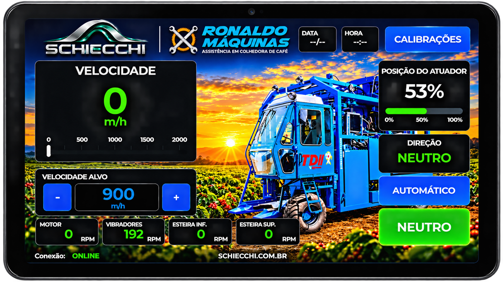
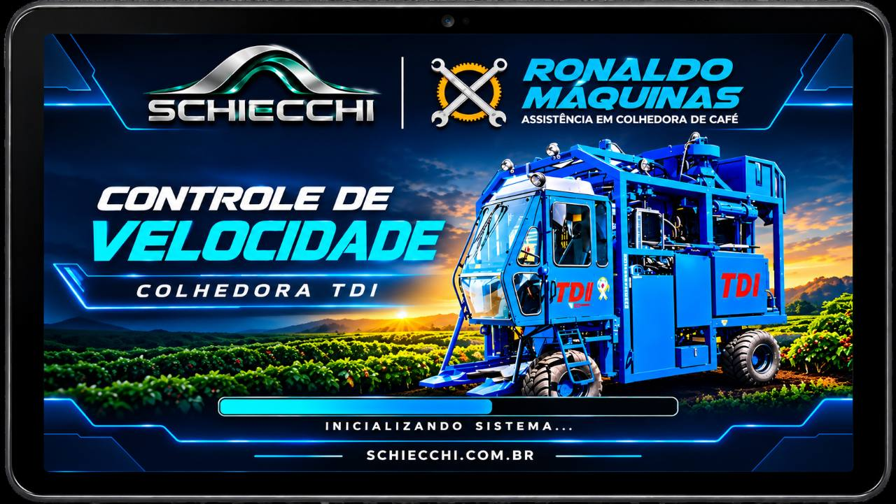

CASO REAL · TRÊS PONTAS — MG
SCHIECCHI PLUS EM OPERAÇÃO.
Monitoramento e controle aplicados em colhedora de café TDI. Uma solução SCHIECCHI em campo, com Ronaldo Máquinas como parceiro técnico e comercial da aplicação.
CONHECER O SCHIECCHI PLUS
A APLICAÇÃO
ELETRÔNICA, SOFTWARE E CONTROLE NA COLHEDORA.
Em Três Pontas, Minas Gerais, o SCHIECCHI PLUS está aplicado em uma colhedora de café TDI. A interface reúne informações de funcionamento e recursos de controle para o acompanhamento da operação.
O sistema apresenta velocidade, velocidade-alvo, posição do atuador, direção e estado, além de dados do motor, vibradores e esteiras. Também disponibiliza calibrações e conexão conforme a configuração da aplicação.
REGISTRO DE APLICAÇÃO REAL
AS TELAS DA APLICAÇÃO TDI.

As marcas e a colhedora mostradas nas telas fazem parte dos registros originais da aplicação.
MONITORAMENTO E CONTROLE
CONHEÇA O SISTEMA SCHIECCHI PLUS.
Veja os recursos do produto e as diferenças entre PLUS e ESSENCIAL.